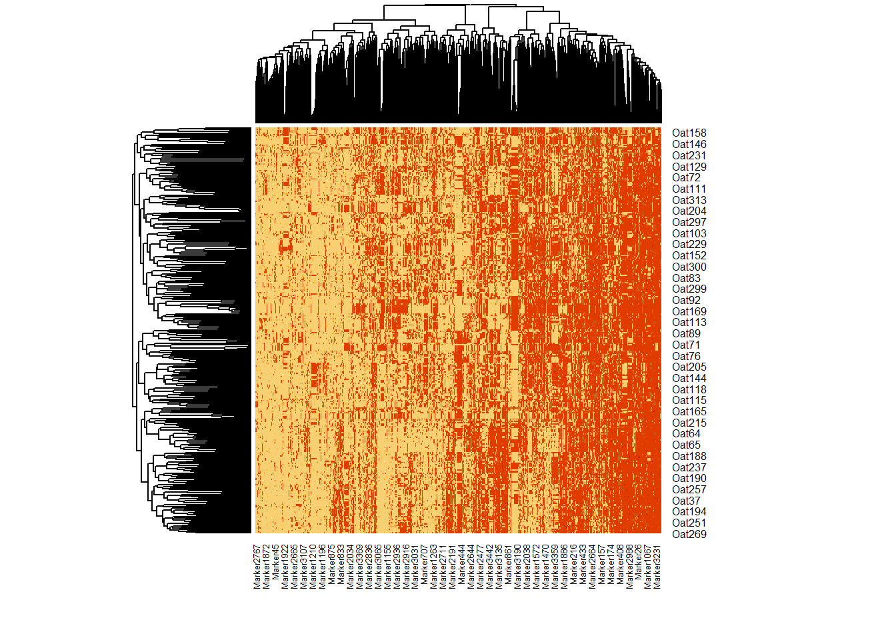
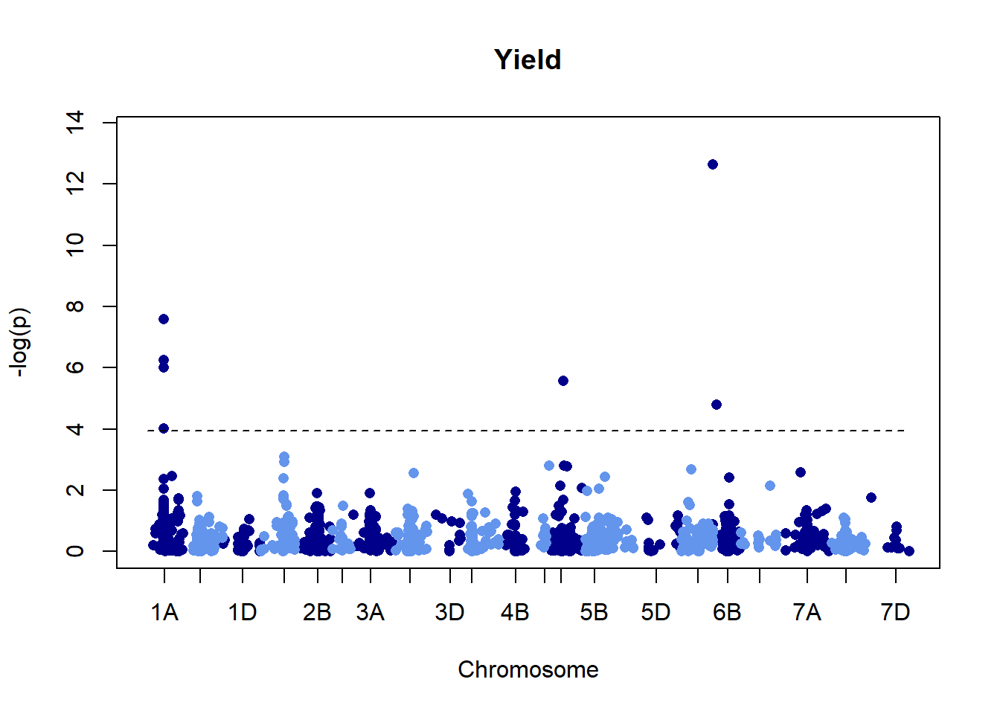
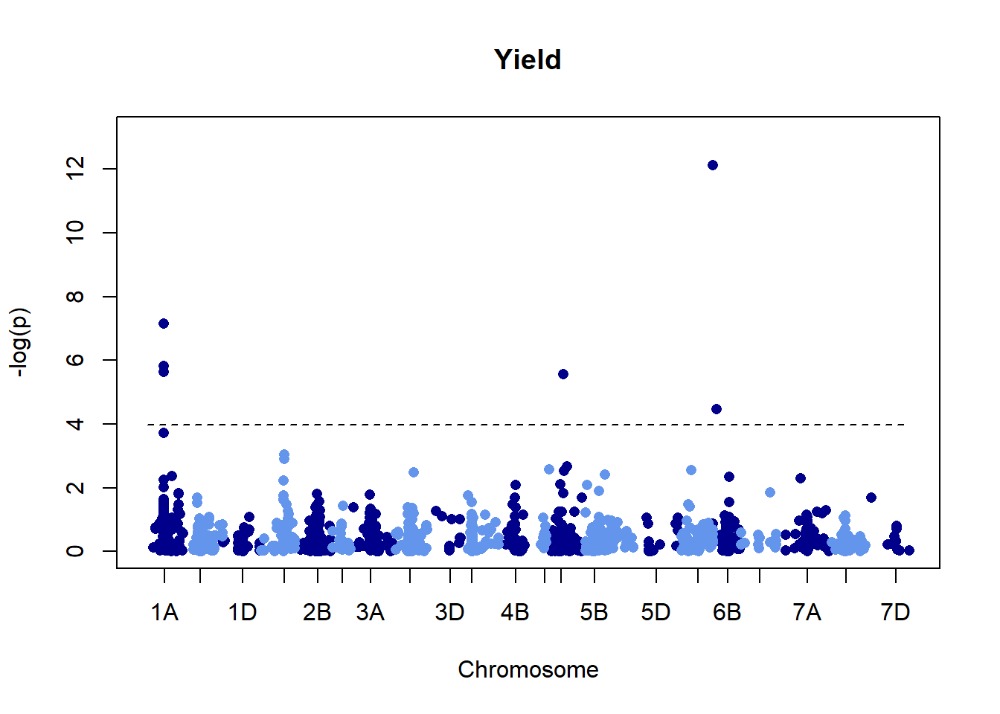
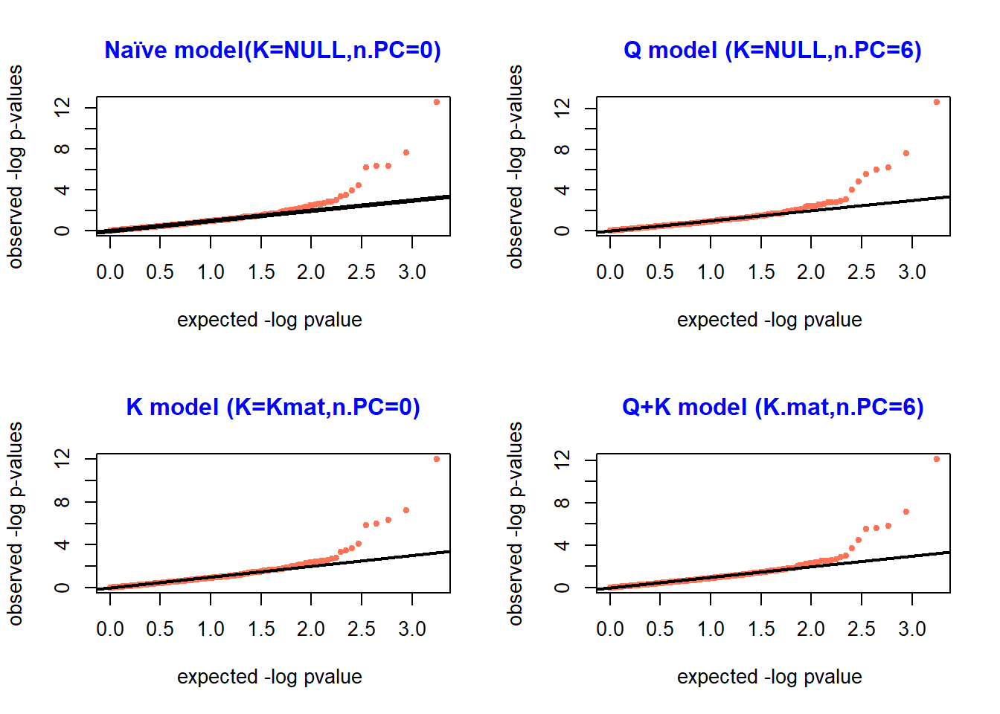

GWAS
Chris Simoes
9/5/2021
Last updated: 2021-09-05
Checks: 6 1
Knit directory: GWAS/
This reproducible R Markdown analysis was created with workflowr (version 1.6.2). The Checks tab describes the reproducibility checks that were applied when the results were created. The Past versions tab lists the development history.
The R Markdown is untracked by Git. To know which version of the R Markdown file created these results, you’ll want to first commit it to the Git repo. If you’re still working on the analysis, you can ignore this warning. When you’re finished, you can run wflow_publish to commit the R Markdown file and build the HTML.
Great job! The global environment was empty. Objects defined in the global environment can affect the analysis in your R Markdown file in unknown ways. For reproduciblity it’s best to always run the code in an empty environment.
The command set.seed(20210905) was run prior to running the code in the R Markdown file. Setting a seed ensures that any results that rely on randomness, e.g. subsampling or permutations, are reproducible.
Great job! Recording the operating system, R version, and package versions is critical for reproducibility.
Nice! There were no cached chunks for this analysis, so you can be confident that you successfully produced the results during this run.
Great job! Using relative paths to the files within your workflowr project makes it easier to run your code on other machines.
Great! You are using Git for version control. Tracking code development and connecting the code version to the results is critical for reproducibility.
The results in this page were generated with repository version 20cf177. See the Past versions tab to see a history of the changes made to the R Markdown and HTML files.
Note that you need to be careful to ensure that all relevant files for the analysis have been committed to Git prior to generating the results (you can use wflow_publish or wflow_git_commit). workflowr only checks the R Markdown file, but you know if there are other scripts or data files that it depends on. Below is the status of the Git repository when the results were generated:
Ignored files:
Ignored: .Rhistory
Ignored: .Rproj.user/
Untracked files:
Untracked: analysis/GWAS.Rmd
Untracked: code/addToREADME.R
Untracked: data/GWAS_genotypes.txt
Untracked: data/GWAS_map.txt
Untracked: data/GWAS_pheno.txt
Note that any generated files, e.g. HTML, png, CSS, etc., are not included in this status report because it is ok for generated content to have uncommitted changes.
There are no past versions. Publish this analysis with wflow_publish() to start tracking its development.
Objetivos
Trabalhar com dados para mapeamento associativo de larga escala.
Reproducibilidade
Aqui esta o README file para esse reporte
Script setup
Checando pacotes, iniciando o arquivo README.md, definindo random seed
AlphaSimR rrBLUP tidyverse
"AlphaSimR 1.0.3 4.1.1" "rrBLUP 4.6.1 4.1.0" "tidyverse 1.3.1 4.1.0"
workflowr here
"workflowr 1.6.2 4.1.0" "here 1.0.1 4.1.0" Fenótipos
Aqui vamos imprimir as primeiras linhas do arquivo fenotípico.
GID ENV Yield
1 Oat179 Env1 6317.606
2 Oat130 Env2 6335.475
3 Oat303 Env4 7259.274
4 Oat270 Env1 6916.124
5 Oat202 Env4 6845.943
6 Oat233 Env3 5750.001
Aqui está a estrutura do arquivo fenotípico.
'data.frame': 932 obs. of 3 variables:
$ GID : chr "Oat179" "Oat130" "Oat303" "Oat270" ...
$ ENV : chr "Env1" "Env2" "Env4" "Env1" ...
$ Yield: num 6318 6335 7259 6916 6846 ...
Teste de Normalidade e removendo outliers
Teste de Normalidade dos dados.
Shapiro-Wilk normality test
data: pheno$Yield
W = 0.99392, p-value = 0.0007821
[1] 8979.334 3944.849 3947.001 3948.641 4576.506 3942.469 8166.286 4616.835
[9] 4672.310 8920.055
Novo teste após remover outliers.
Shapiro-Wilk normality test
data: pheno$Yield
W = 0.99719, p-value = 0.1093

Genotipos
Nessa parte vamos checar os dados genotípicos e filtrar. Para essa situação específica estou removendo: 1 - Indivíduos com mais de 40% de dados perdidos (IM = 0.40). 2 - Marcadores com mais de 60% de dados perdidos (MM = 0.60). 3 - Indivíduos com frequencia de marcadores heterozigoto maior que 5% (H = 0.05). Para esse trabalho estou usando aveia (oat) que é autógama, assim como o tabaco, e espero uma frequencia baixa de loci heterozigotos em linhagens.
Imprimindo as 5 primeiras linhas e colunas do arquivo de genotipagem.
Marker1 Marker2 Marker3 Marker4 Marker5
Oat1 NA 1 1 1 1
Oat2 -1 NA 1 1 1
Oat3 -1 1 1 1 NA
Oat4 -1 NA -1 1 1
Oat5 -1 NA -1 1 1
Imprimindo as 5 primeiras linhas e colunas do arquivo do mapa genético.
Markers chrom loc
1 Marker607 1A 16730
2 Marker2900 1A 16730
3 Marker1316 1A 25338
4 Marker2297 1A 26595
5 Marker1895 1A 27071
Imprimindo as 5 linhas do arquivo de genotipagem após filtragem.
Marker1 Marker2 Marker3 Marker4 Marker5
Oat1 NA 1 1 1 1
Oat2 -1 NA 1 1 1
Oat3 -1 1 1 1 NA
Oat4 -1 NA -1 1 1
Oat5 -1 NA -1 1 1
[1] 328 3268Imputação
Fazer imputação melhora bastante a qalidade da análise. Caso tenha um bom genoma, recomendo usar um método paralelo, como o Beagle para imputação. Caso não seja possível, pode fazer a imputação com o rrBLUP mesmo. O algorítimo que recomendo é o EM, mas também pode fazer a imputação com a média. O rrBLUP também remove alelos com baixa frequencia (Minor allele frequency - MAF). Aqui estou selecionando MAF 0.05.
[1] "A.mat converging:"
[1] 0.0431
[1] 0.00647
[1] "A" "imputed"
Marker1 Marker3 Marker4 Marker5 Marker7
Oat1 -1.44066 1 1 1.0000000 -1
Oat2 -1.00000 1 1 1.0000000 -1
Oat3 -1.00000 1 1 0.6753843 -1
Oat4 -1.00000 -1 1 1.0000000 -1
Oat5 -1.00000 -1 1 1.0000000 -1
Oat1 Oat2 Oat3 Oat4 Oat5
Oat1 1.8191561 0.220454719 0.1009423 0.15218203 0.177660657
Oat2 0.2204547 2.111943356 0.1266988 0.02978199 -0.007214392
Oat3 0.1009423 0.126698834 1.8000414 -0.12678093 -0.126589635
Oat4 0.1521820 0.029781989 -0.1267809 1.87520005 1.803271696
Oat5 0.1776607 -0.007214392 -0.1265896 1.80327170 1.873595678
Estrutura da População
Análise de componentes principais
Aqui estão os 5 principais componentes:
[,1] [,2] [,3] [,4] [,5]
Oat1 -6.976549 -9.824339 5.290272 -1.184019 5.00415366
Oat2 -8.745900 -10.545057 4.730541 -8.834242 -0.02504027
Oat3 -6.292199 3.412671 4.774038 6.657838 8.93925754
Oat4 -19.524147 7.689386 -7.963162 -13.644082 -6.19429306
Oat5 -19.334593 8.011715 -7.624697 -13.033030 -6.53379527
[1] 8.6
[1] 5.2
Calinski criterion optimal number of clusters: 2
groups2
1 2
251 77 


Combinando Genótipos e Fenótipos
Agora vamos combinar os arquivos de genotipagem, mapa genético e fenotipagem.
GID ENVEnv1 ENVEnv2 ENVEnv3 ENVEnv4 Yield
77 Oat1 0 0 1 0 6126.514
81 Oat1 1 0 0 0 6613.542
330 Oat1 0 0 0 1 5984.449
417 Oat1 0 1 0 0 6855.848
441 Oat2 0 1 0 0 5510.549
442 Oat2 1 0 0 0 5711.477
[1] 328 1962
Markers chrom loc
1 Marker607 1A 16730
2 Marker2900 1A 16730
3 Marker1316 1A 25338
4 Marker2297 1A 26595
5 Marker1895 1A 27071
6 Marker2902 1A 27071
[1] 1759 331
GID ENVEnv1 ENVEnv2 ENVEnv3 ENVEnv4 Yield
77 Oat1 0 0 1 0 6126.514
81 Oat1 1 0 0 0 6613.542
330 Oat1 0 0 0 1 5984.449
417 Oat1 0 1 0 0 6855.848
441 Oat2 0 1 0 0 5510.549
442 Oat2 1 0 0 0 5711.477
mark chr loc Oat1 Oat2 Oat3
Marker2297 Marker2297 1A 26595 -1 -1.0000000 -1
Marker3125 Marker3125 1A 35232 1 -1.0000000 -1
Marker2100 Marker2100 1A 35653 -1 1.0000000 1
Marker1797 Marker1797 1A 51943 1 -0.4259651 -1
Marker3191 Marker3191 1A 51943 -1 1.0000000 1
Marker1403 Marker1403 1A 56393 -1 1.0000000 1
Oat1 Oat2 Oat3 Oat4 Oat5
Oat1 1.8191561 0.220454719 0.1009423 0.15218203 0.177660657
Oat2 0.2204547 2.111943356 0.1266988 0.02978199 -0.007214392
Oat3 0.1009423 0.126698834 1.8000414 -0.12678093 -0.126589635
Oat4 0.1521820 0.029781989 -0.1267809 1.87520005 1.803271696
Oat5 0.1776607 -0.007214392 -0.1265896 1.80327170 1.873595678Análise de Associação
[1] "GWAS for trait: Yield"
[1] "Variance components estimated. Testing markers."
[1] "GWAS for trait: Yield"
[1] "Variance components estimated. Testing markers."
[1] "GWAS for trait: Yield"
[1] "Variance components estimated. Testing markers."
[1] "GWAS for trait: Yield"
[1] "Variance components estimated. Testing markers."
[1] "mark" "chr" "loc" "Yield"
'data.frame': 1759 obs. of 4 variables:
$ mark : chr "Marker2297" "Marker3125" "Marker2100" "Marker1797" ...
$ chr : chr "1A" "1A" "1A" "1A" ...
$ loc : int 26595 35232 35653 51943 51943 56393 66313 68829 69872 70102 ...
$ Yield: num 0.325 0.451 0.588 0.187 0.861 ...
sessionInfo()
R version 4.1.1 (2021-08-10)
Platform: x86_64-w64-mingw32/x64 (64-bit)
Running under: Windows 10 x64 (build 19043)
Matrix products: default
locale:
[1] LC_COLLATE=English_United States.1252
[2] LC_CTYPE=English_United States.1252
[3] LC_MONETARY=English_United States.1252
[4] LC_NUMERIC=C
[5] LC_TIME=English_United States.1252
attached base packages:
[1] stats graphics grDevices utils datasets methods base
other attached packages:
[1] vegan_2.5-7 lattice_0.20-44 permute_0.9-5 rrBLUP_4.6.1
loaded via a namespace (and not attached):
[1] Rcpp_1.0.7 highr_0.9 pillar_1.6.2 compiler_4.1.1
[5] bslib_0.3.0 later_1.3.0 jquerylib_0.1.4 git2r_0.28.0
[9] workflowr_1.6.2 tools_4.1.1 bit_4.0.4 digest_0.6.27
[13] nlme_3.1-152 jsonlite_1.7.2 evaluate_0.14 lifecycle_1.0.0
[17] tibble_3.1.3 mgcv_1.8-36 pkgconfig_2.0.3 rlang_0.4.11
[21] Matrix_1.3-4 parallel_4.1.1 yaml_2.2.1 xfun_0.25
[25] fastmap_1.1.0 cluster_2.1.2 stringr_1.4.0 knitr_1.33
[29] fs_1.5.0 vctrs_0.3.8 sass_0.4.0 hms_1.1.0
[33] grid_4.1.1 tidyselect_1.1.1 bit64_4.0.5 rprojroot_2.0.2
[37] glue_1.4.2 here_1.0.1 R6_2.5.1 fansi_0.5.0
[41] vroom_1.5.4 rmarkdown_2.10 purrr_0.3.4 readr_2.0.1
[45] tzdb_0.1.2 magrittr_2.0.1 splines_4.1.1 MASS_7.3-54
[49] promises_1.2.0.1 ellipsis_0.3.2 htmltools_0.5.2 httpuv_1.6.2
[53] utf8_1.2.2 stringi_1.7.4 crayon_1.4.1